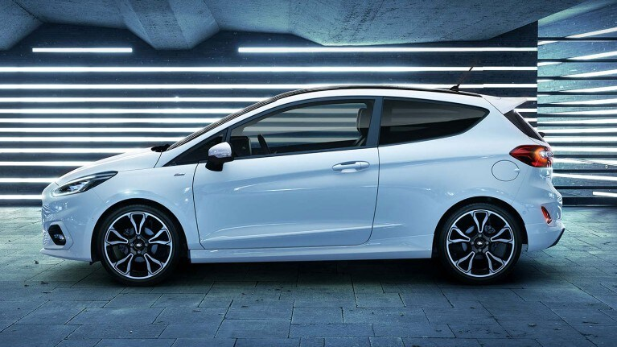
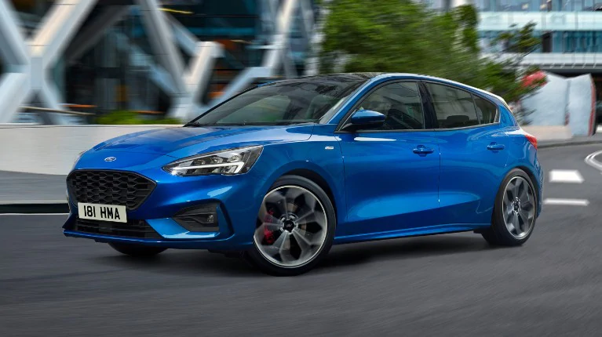
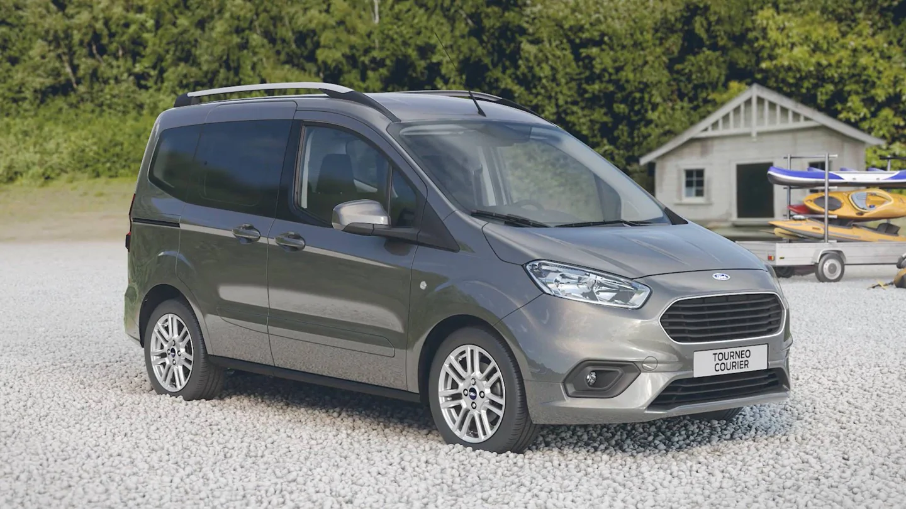

FORD FIESTA
L'agile Fiesta est maintenant plus efficace que jamais. Son système EcoBoost Mild Hybrid avancé est conçu pour minimiser les émissions et soutenir le moteur à essence avec une puissance supplémentaire en cas de besoin. En outre, la technologie d'auto-recharge permet à la batterie hybride de se recharger lorsque vous conduisez.

Focus Mild Hybrid
La Focus est conçue pour offrir un mélange gratifiant de manipulation précise et d'économie de carburant considérable. Afin de réduire les émissions tout en améliorant encore la puissance et l'efficacité, elle est équipée d'un groupe motopropulseur hybride EcoBoost avancé. Cela fait partie de la promesse de Ford de livrer 14 véhicules électrifiés d'ici la fin de l'année 2020

FORD TOURNEO COURIER
Le nouveau Tourneo Courier est à la fois compact et polyvalent. Le nouvel habitacle soigneusement conçu est doté de sièges modulables pouvant accueillir confortablement jusqu'à cinq passagers. Alternativement, il peut être configuré de manière à vous offrir de l'espace supplémentaire pour tout ce que vous devez transporter.